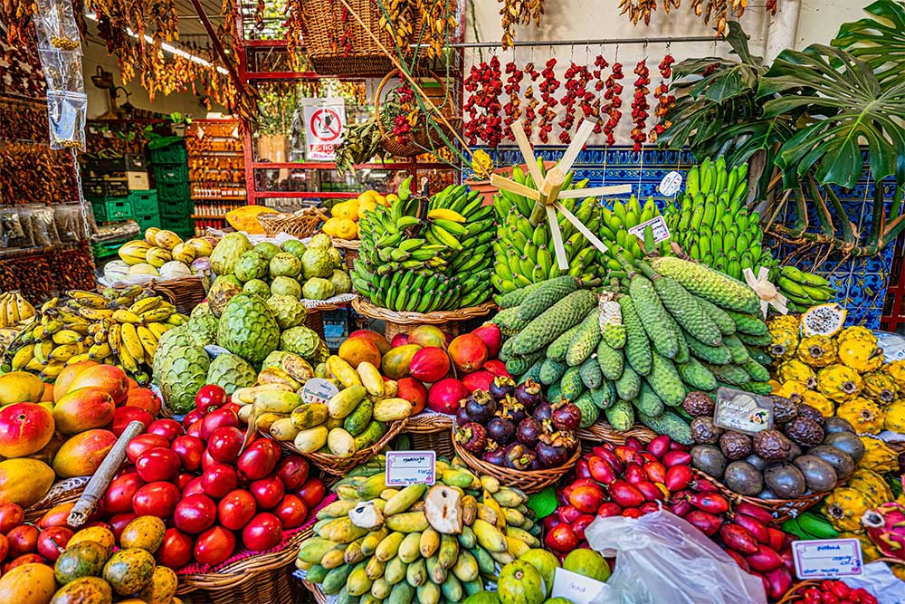
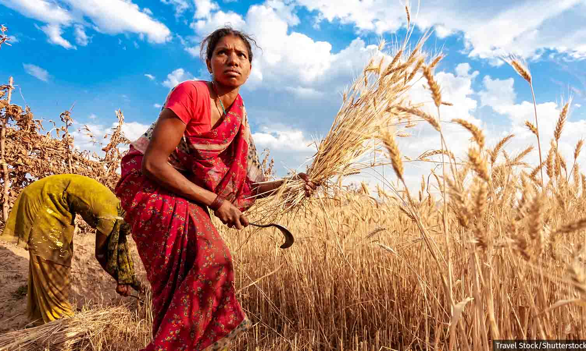

Research presentation · SP Jain MAIB · AI in Operations
Annadata
Computer vision · predictive yield · production simulation · fair mandi pricing · human-in-the-loop ethics
Group 3 — Aftaab · Isaac · Ishaan · Faculty mentor: Dr. Sandip Kumar Roy
01 · Outline
02 · Problem & motivation
Quality
Manual visual sorting varies by person and shift → rejects & waste
Process
Moisture, grade, RPM, defects rarely sit in one predictive view
Market
No shared Grade A/B/C language between farm, line, and mandi

03 · Customers & stakeholders
Primary user
Primary user
Secondary
Not built for: faculty slides only. The prototype is a farmer-facing operations tool; this deck explains the research behind it.
04 · Objectives
| Brief requirement | Our delivery |
|---|---|
| CV for quality / defects | Leaf + Produce dual Inspect (TFLite) |
| Yield from quality · moisture · process | 7-param yield engine + CV auto-fill |
| Simulate bottlenecks / throughput | /yield scenarios · kg/h · optimize playbook |
| Dashboard: defect · yield · efficiency | /insights live session + KPIs |
| Ethics: rural employment | /ethics HITL · skill elevation |
05 · Context
06 · Research questions
RQ1
→ Produce bake-off · Grade A/B/C · HITL <70%
RQ2
→ Yield MAPE · bottleneck scenarios · throughput kg/h
RQ3
→ Agmarknet modal · A+10% / B / C−20%
RQ4
→ HITL · role elevation · ethics discussion
07 · Methodology
Rule: Insights KPIs = Colab hold-out only. No invented accuracy.
08 · System architecture
Client
Services
09 · Data design
Leaf Health
Produce Quality
Why separate? A bad leaf does not define harvested-fruit market grade. One model for both would be scientifically dishonest.
10a · Experiments · Leaf
Setup
Winner
97.4%
EfficientNetB0 hold-out
Best accuracy + F1 composite among MobileNetV2, EfficientNetB0, ResNet50, DenseNet121, custom CNN
10b · Experiments · Produce
80/20 split · transfer learning · TF 2.20
Selected
Acc 96.96%
F1 97.12%
EfficientNet won on leaves — lost on produce. Task-specific choice.
11 · Model selection logic
| Task | Compared | Winner | Why |
|---|---|---|---|
| Leaf disease | 5 CNNs | EfficientNetB0 | Best composite · phone-friendly |
| Produce grade | 3 CNNs | ResNet50 | Highest acc + F1 on hold-out |
| Crop / Fert | RF (tabular) | RandomForest | Strong on small tables · ONNX |
| Price series | GBR | GradientBoosting | MAPE 3.4% hold-out |
| Process yield | Regressor | Linear / tree | MAPE 3.52% · brief inputs |
Principle: hold-out wins — not brand names.
11b · Tabular & forecast
99.3%
Crop RF · 80/20 stratified
NPK · pH · rain → ONNX in browser
100%
Fertilizer RF hold-out
Same export path · Kaggle schema
3.4% / 3.52%
Price MAPE · Yield MAPE
Lower is better on forecast error
12 · End-to-end process
13 · Price connect (detail)
Example: Modal ₹1,733 → Grade A ≈ ₹1,906 · Grade C ≈ ₹1,386
14 · Production simulation
Simulate
Stressed · Baseline · Optimal
Identify
Wet+RPM · defects · grade · temp
Optimize
Playbook + one-click Optimal line
15 · Evaluation
97.4%
Leaf
97.0%
Produce
99.3%
Crop
100%
Fertilizer*
3.4%
Price MAPE
3.52%
Yield MAPE
94.2%
Beans pilot
5
CV compared
*Public Kaggle hold-out — still keep HITL on vision in the field
16 · Ethics & employment

HITL < 70%
Low confidence → block market list until supervisor reviews
Skill elevation
AI drafts grade; people sell, advise, and decide
Honest risk
Business case = less waste (₹), not payroll cuts
17 · Limitations
Lab / dataset photos ≠ every field phone photo → HITL required
~90MB TFLite — local/demo; may need separate hosting on Vercel
High Kaggle scores ≠ perfect farm advice — advisory, not law
18 · Contribution
19 · Prototype
Inspect · Prices · Yield · Market · Insights · Ethics
Open
http://localhost:5173
https://annadata-lake.vercel.app
Related files: index.html (problem) · deck.html (short) · research.html (this deck)
20 · Close
Annadata — inspect honestly, price fairly, optimize the line, keep humans in the loop.
Group 3 · Aftaab · Isaac · Ishaan · SP Jain MAIB
1 / 23